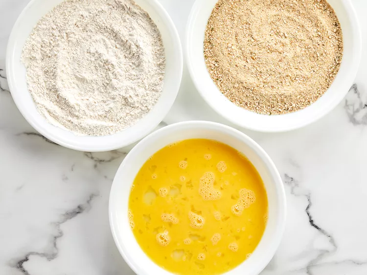
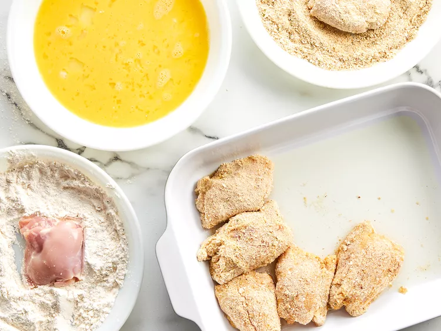
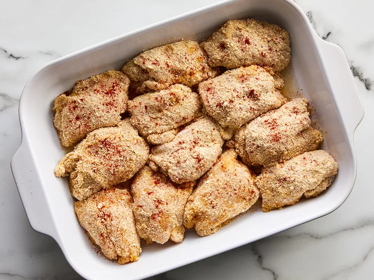

Oven-Fried Chicken

From AllRecipes
Ingredients
- 12 chicken thighs, patted dry
- 1 cup all-purpose flour
- salt and pepper to taste
- 1 cup Italian seasoned bread crumbs
- 3 eggs
- ½ cup vegetable oil
- 1 teaspoon paprika
Steps
- Preheat the oven to 350 degrees F (175 degrees C).
- Place flour in a shallow plate or bowl and season with salt and pepper to taste. Put bread crumbs in another shallow plate or bowl and beat eggs in another bowl.

- Dredge chicken piece by piece in the flour, then the egg, then the bread crumbs, until all pieces are coated.

- Pour oil into a large baking dish; add the breaded chicken thighs and sprinkle with paprika to taste.

- Bake in the preheated oven for 30 minutes, then turn pieces over and bake for another 30 minutes. Remove from the oven and drain on paper towels.
- Bake in the preheated oven for 30 minutes, then turn pieces over and bake for another 30 minutes. Remove from the oven and drain on paper towels.
Back to Home